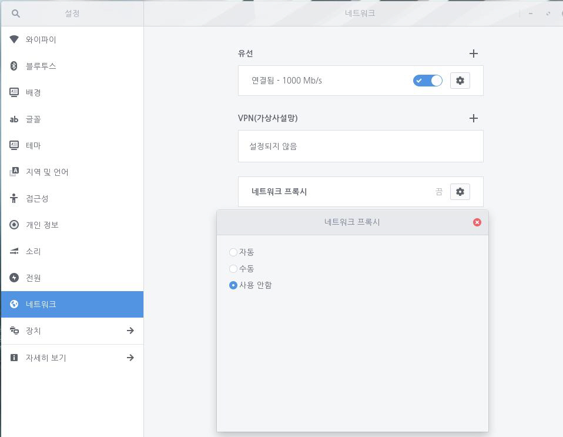

웹 프록시는 사용자가 보고 있는 웹 사이트를 필터링합니다. 웹 프록시는 웹 브라우저에서 요청을 수신하여 웹 페이지와 필요한 요소를 업데이트하고 정책에 따라 사용자에게 그 결과를 전달합니다. 웹 프록시는 일반적으로 비즈니스 영역이나 공공 무선 핫스팟에서 사용됩니다.
다음 단계를 수행하여 프록시를 설정합니다.
1. 좌측 하단의 [시작]

아이콘을 클릭하고 검색 창에 "설정"을 입력한 후 [설정] 애플리케이션을 실행합니다.


2. [설정] 애플리케이션 사이드 바에서 [네트워크]를 클릭합니다.


3. 연결된 네트워크 옆 [설정] 아이콘을 클릭하여 프록시를 설정합니다. [자동], [수동], [사용 안 함] 중 하나를 선택할 수 있습니다.

네트워크 프록시 설정은 다음과 같습니다.
| 설정 | 설명 |
| 사용 안 함 | 애플리케이션이 웹 컨텐츠에 도달하기 위해 직접적인 연결을 사용합니다. |
| 수동 | 각 프록시 프로토콜에 대한 포트와 주소를 설정할 수 있습니다. 제공되는 프록시 프로토콜에는 HTTP, HTTPS, FTP, SOCKS가 있습니다. |
| 자동 | 사용자 시스템에 적합한 설정을 포함한 URL을 설정합니다. 설정 URL을 지정하지 않으면 웹 프록시 자동 검색을 사용합니다. |